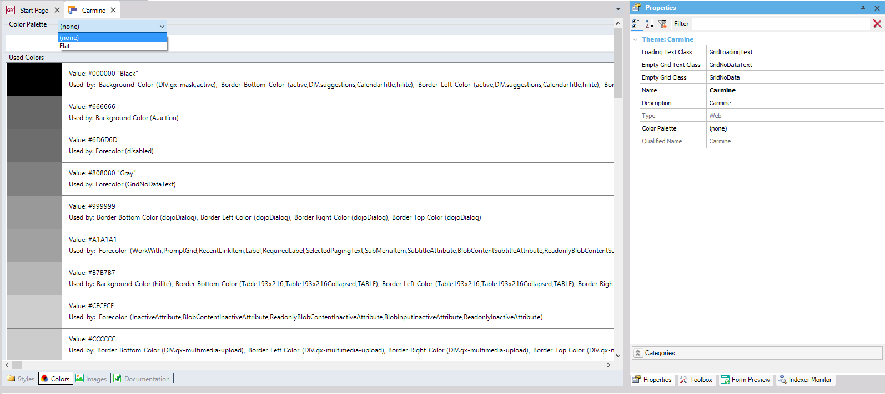

Makes reference to a Color Palette object defined in the KB to dynamically change the colors of an application. Description
The property can be set directly from the Theme properties or from the combo box available in the Colors tab within the Theme.  How to apply changesBuild process of an object that makes reference to the theme. Scope Objects: Theme for Smart Devices, Theme See Also
|
| Backlinks |
| Category:Color Palette object |